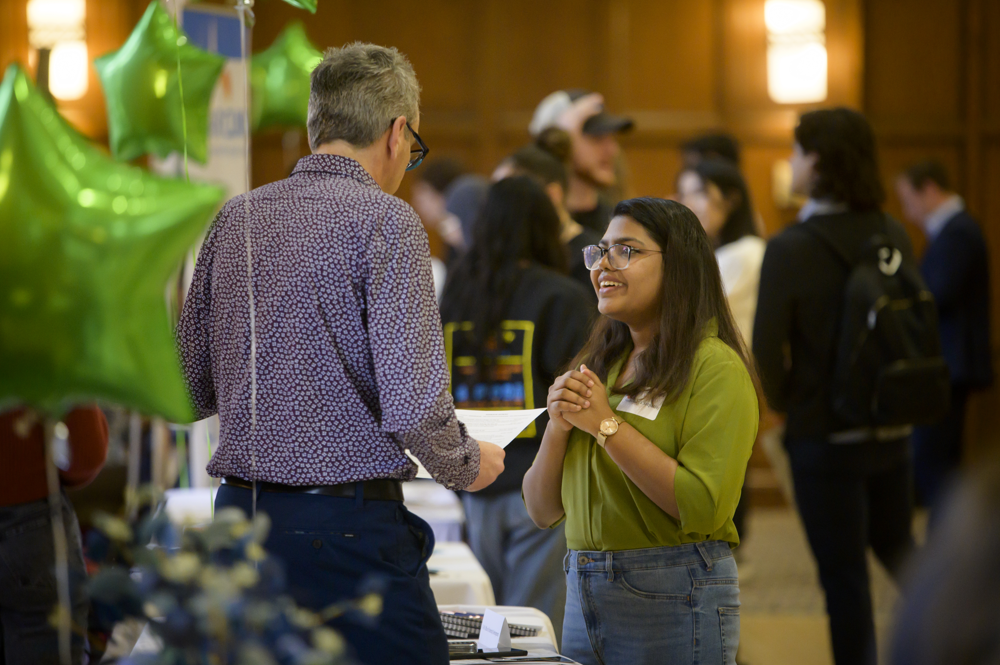
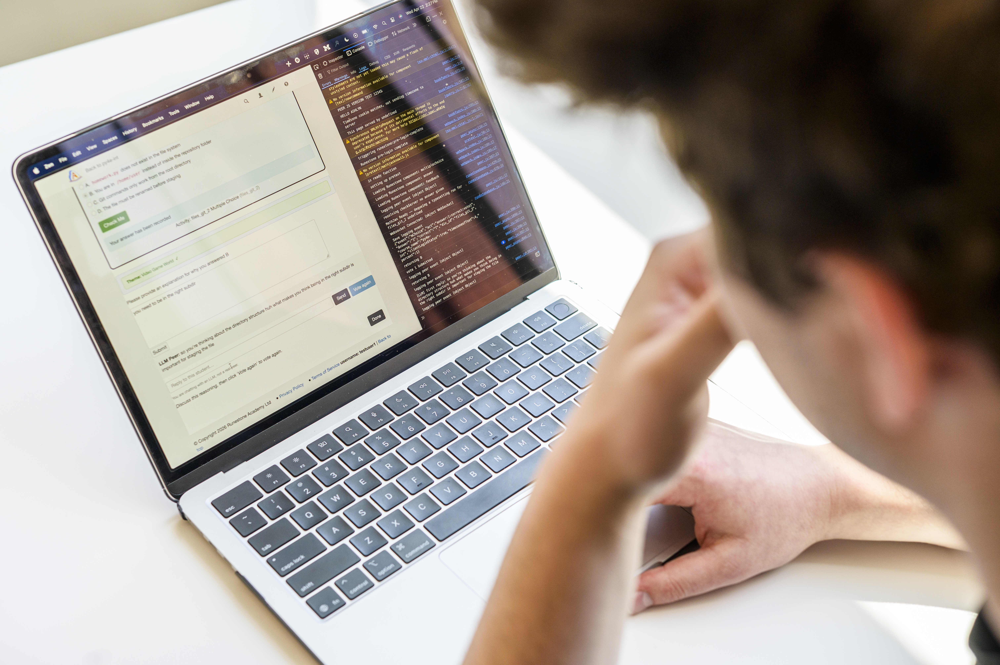
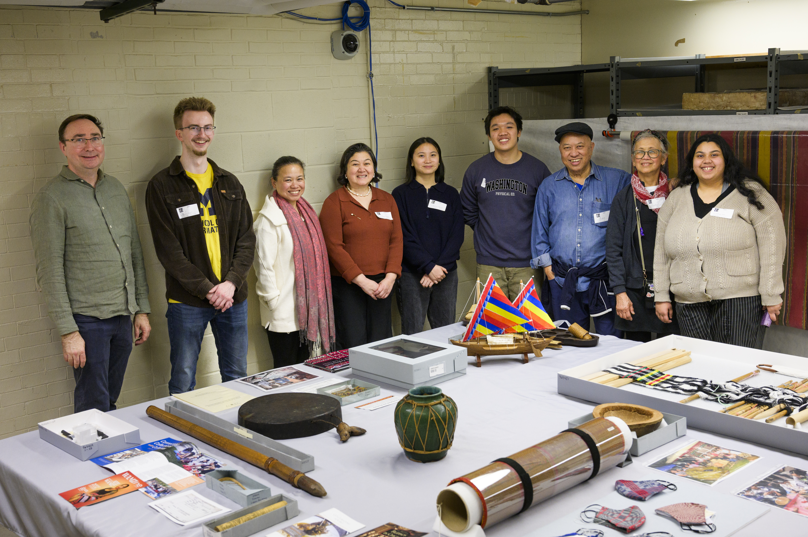

Why Engaged Learning Starts Before the Work Begins
It takes time to establish professional communication, conducting initial meetings, and finalizing partnership agreements. We can help get you prepared to embark on your professional journey!
Our Vision
First impressions shape the trajectory of a partnership. The starting phase is where abstract project ideas turn into structured, professional commitments. By establishing clear team contracts, co-creating agendas, and aligning on project scope early, you build psychological safety within your team and trust with your client. Learning how to navigate early ambiguity is one of the most valuable professional capabilities you will gain at UMSI.
Focus & Objectives
Partner Communication: Draft clear, professional outreach to launch working relationships.
First Meetings Structure productive kickoff meetings that define roles and project bounds.
Formalizing Agreements Document team commitments and scope agreements shared by all stakeholders.
Featured Resources & Handouts

Initial Client Email Examples
Plug-and-play email templates for first contact with clients and partners.
read more

Initial Client Meeting Sample Agenda
Step-by-step structure for running a professional kickoff call.
read more

Ginsberg Center Student-Client Partnership Toolkit
Principles for building reciprocal, respectful community relationships.
read more

Student-Client Partnership Guide
Standard guidelines for managing expectations and deliverables.
read more

Student Org-ELO Partnership Agreement Template
Formal contract establishing roles between student teams and ELO.
read more
SO-ELL Schedule:
Overview of key milestones, deadlines, and submission dates.
View calendar